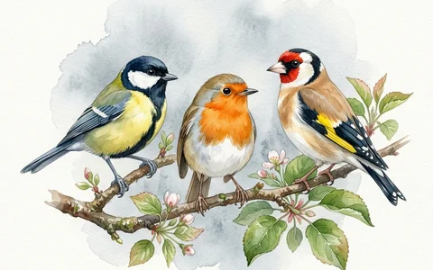

¡Entra en el mundo que estás coloreando!
Junto a cada dibujo del libro encontrarás un código QR. Escanéalo y escucha el sonido real. Elige una categoría para ver todos los sonidos.

Aves
Cantos y sonidos reales de aves de prados, bosques y lagos de Polonia.
Anfibios
El croar de ranas y sapos.
próximamente
Máquinas
Motores, bocinas y sonidos de vehículos.
próximamente